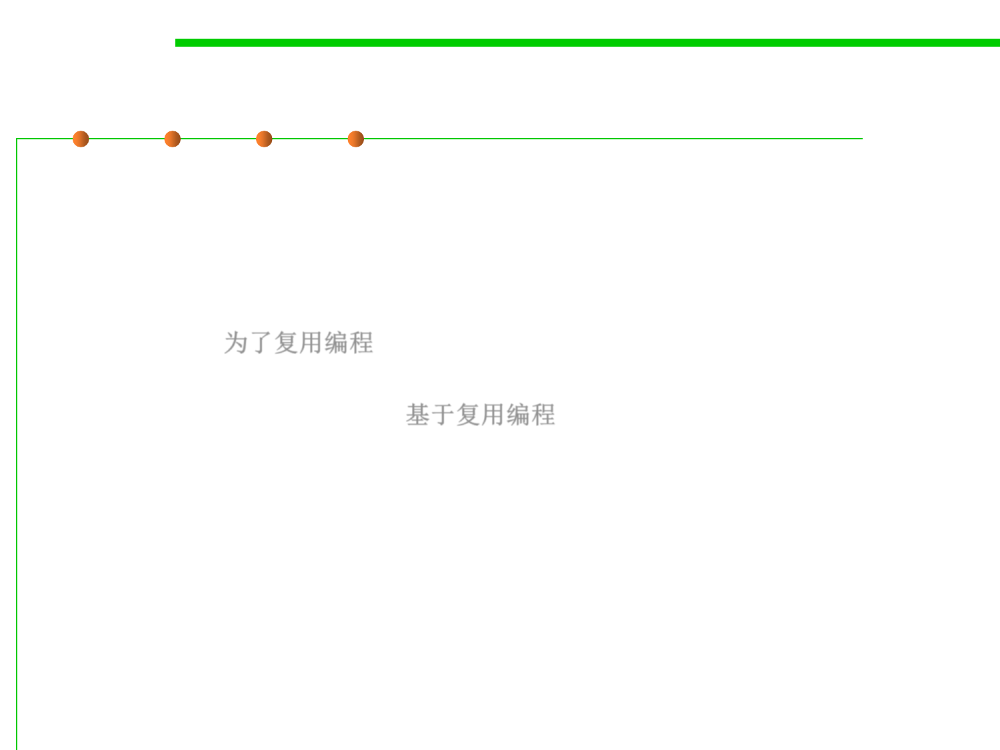

5.1 Metrics, Morphology and External Observations of Reusability
Software reuse 软件复用/重用
▪ Software reuse is the process of implementing or updating
software systems using existing software components.
▪ Two perspectives of software reuse
– Creation: creating reusable resources in a systematic way (programming
for reuse) 为了复用编程
– Use: reusing resources as building blocks for creating new systems
(programming with reuse) 基于复用编程
▪ Why reuse?
– “The drive to create reusable rather than transitory artifacts has aesthetic
and intellectual as well as economic motivations and is part of man’s
desire for immortality. It distinguishes man from other creatures and
civilized from primitive societies” (Wegner, 1989). “创造可重复使用而不
是过渡性物品的动力，来自审美、知识和经济动机，以及人类对不朽的渴望
，它将人与其他生物区分开来，体现了文明社会与原始社会的区别。”